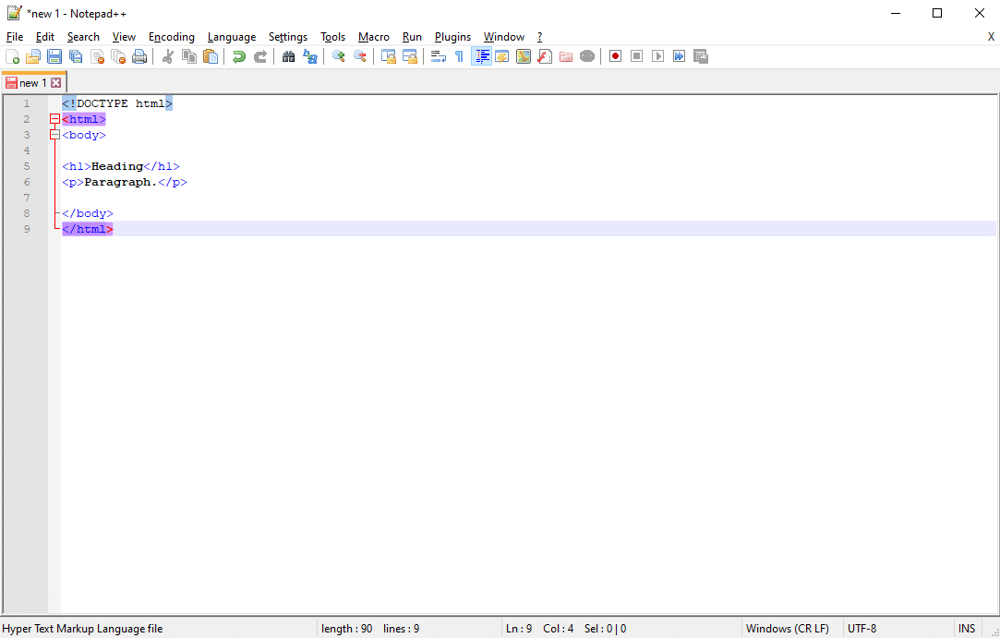
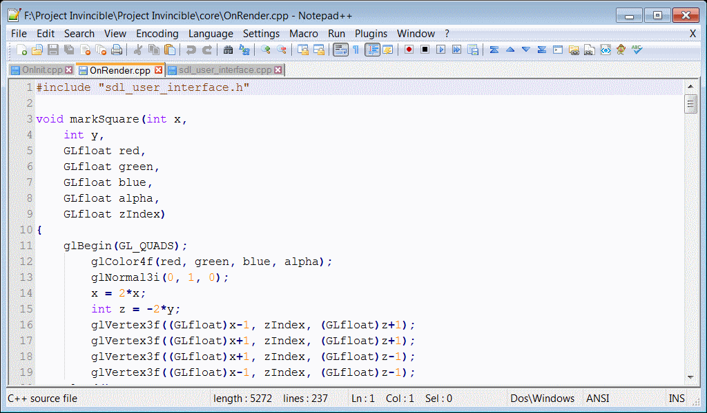
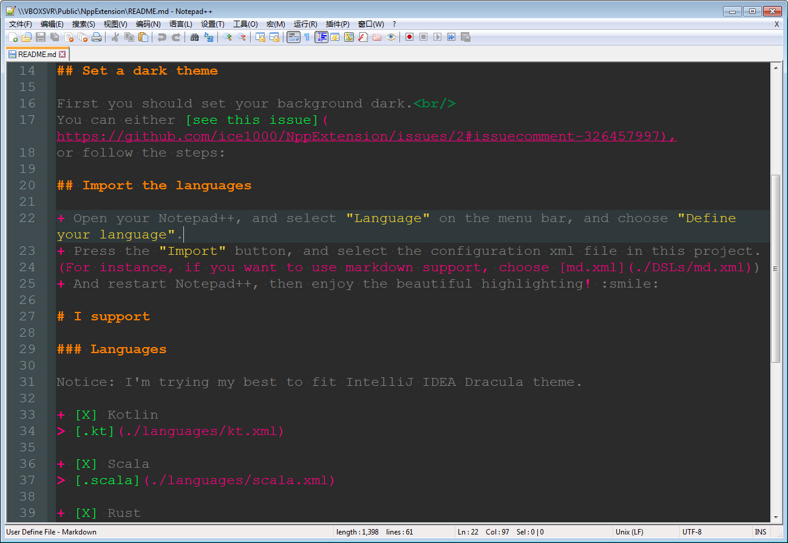
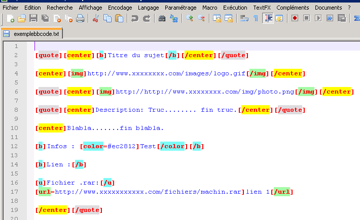
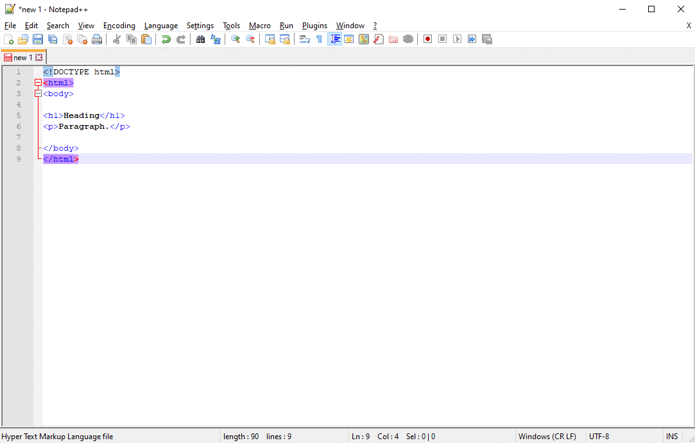
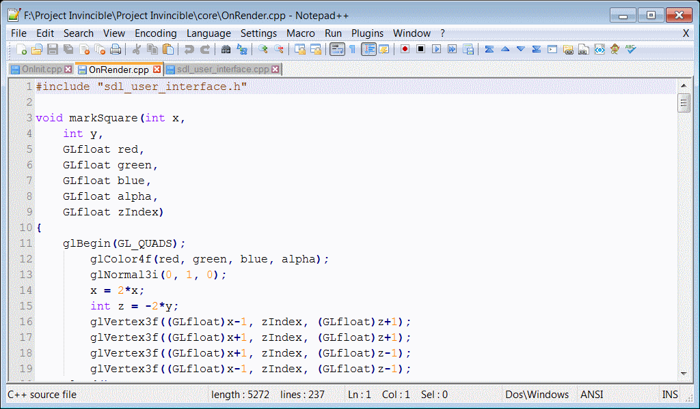
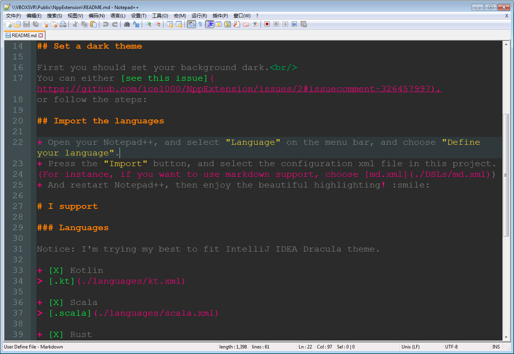
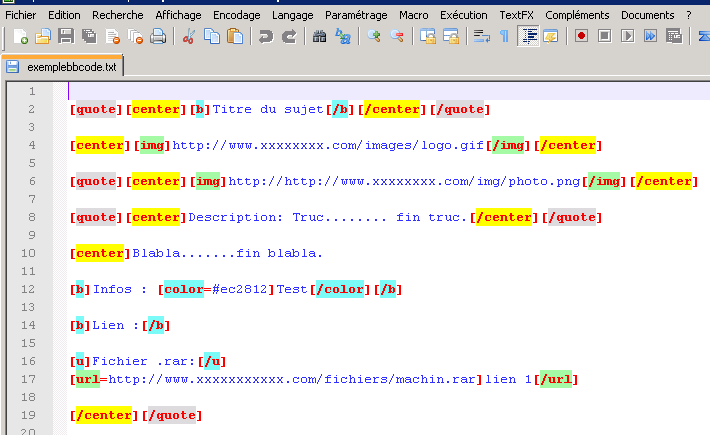

Presentation de notepad++ et quelques impressions ecran de celui ci:
Reconnu pour sa légèreté, Notepad++ est un éditeur de texte et de code pour Windows. C’est souvent le premier outil avec lequel un développeur travaillera, car il est très simple et pas difficile à apprendre, et pourtant il est fourni avec de nombreuses fonctionnalités pour vous faciliter la vie.
Notepad++ gère des dizaines de langues, mais il supporte HTML, CSS, PHP et JavaScript. Ainsi, il fonctionne avec tous les langages dont un développeur WordPress aura besoin. Et il a été activement mis à jour depuis sa sortie en 2003, donc vous savez qu’il va être maintenu de manière fiable pour les années à venir.
Le programme comprend la sauvegarde automatique, la recherche et le remplacement, la vue en écran partagé, la modification simultanée et beaucoup d’autres fonctions intéressantes comme la prise en charge d’extensions tierces. Notepad++ est idéal pour les débutants, mais il contient suffisamment de qualité pour durer toute votre carrière de développeur web.
 






